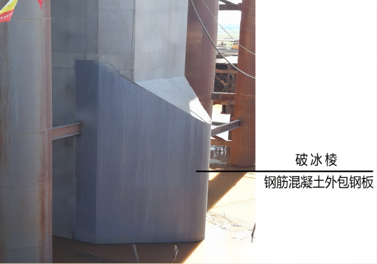
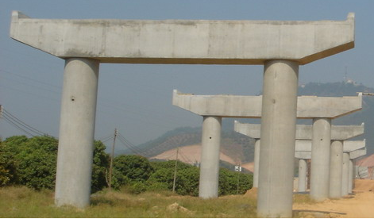

第二节 桥墩构造与设计
第二节 桥墩构造与设计
[A6-2.20]桥墩设计与桥墩施工方法有关，采用现浇法施工时，桥墩设计包括一般构造设计和钢筋构造设计两部分；采用预制装配法施工时，桥墩设计包括一般构造设计、钢筋构造设计和连接构造设计三部分。根据桥跨结构形式、桥墩所处工程环境等因素可选定桥墩类型，如有公路桥梁标准设计图可直接采用，若没有，则需参照已建工程实桥桥墩和工作经验拟定桥墩各部分尺寸和截面配筋，并应满足现行《圬工规》（JTG D61）、《公路钢筋混凝土及预应力混凝土桥涵设计规范》（JTG 3362）等规定的材料等级要求、结构构造要求、配筋要求等，再通过结构验算结果最终确定桥墩结构的设计参数。
[A6-2.21]重力式桥墩设计包括墩帽设计和墩身设计两部分，基础设计在“基础工程”课程中介绍。
（1）一般构造
[A6-2.22]墩帽直接承受桥跨结构，应力较集中，因此桥梁的墩帽一般采用钢筋混凝土材料；小跨径桥梁的墩帽除严寒地区外，可采用素混凝土或石料圬工材料砌筑。《公路钢筋混凝土及预应力混凝土桥涵设计规范》（JTG 3362）规定，对于特大、大跨径桥梁的墩帽厚度不应小于50cm，对于中、小跨径桥梁的墩帽厚度不应小于40cm。墩帽顶面常做成10%的排水坡（图6-2-17），墩帽的四周较墩身出檐5～10cm，并在其上做成沟槽形滴水。在墩帽顶放置支座的部位，应设置支承垫石，支承垫石的形式及尺寸视上部构造要求、支座大小和型式确定，与支座底板边缘相对应的支座垫石边缘应向外延伸10～20cm，支座垫石顶面应高出墩帽顶面排水坡的上棱。若采用板式橡胶支座，应考虑更换支座所需的位置。当桥墩上相邻两跨的支座高度不同时，可用混凝土垫石调整。

图6-2-17 墩帽一般构造和钢筋构造
[A6-2.23]当桥面较宽时，为了节省桥墩圬工，减轻结构自重，常利用挑出的悬臂或托盘来缩短墩身横向长度，做成悬臂式墩帽[图6-2-18a）]或托盘式墩帽[图6-2-18b）]。悬臂式墩帽一般采用钢筋混凝土材料，墩帽长度和宽度由上部构造型式和尺寸、支座尺寸和施工吊装要求等条件确定；墩帽高度由结构受力和钢筋排列的需要确定；悬出部分高度向两端头可逐渐缩小，悬臂两端的高度通常采用不小于40cm。

图6-2-18 悬臂式和托盘式墩帽
[A6-2.24]拱桥主拱圈的拱脚大多为倾斜面，不是水平放置在墩帽上，因此，在桥墩顶面的边缘设置呈倾斜面的拱座（或五角石）（图6-2-19），直接承受由拱圈传来的压力。无铰拱桥的拱座设计成与拱轴线呈正交的斜面。当桥墩两侧跨径相等时，则拱座均设置在桥墩顶部的起拱线高程上，有时考虑桥面纵坡，两侧的起拱线高程可以略有不同。当桥墩两侧的跨径不相等、永久作用水平推力不平衡时，将拱座设置在不同的起拱线高程上，以减小不平衡水平推力引起的基底反力偏心距。

图6-2-19 拱桥重力式桥墩
（2）钢筋构造
[A6-2.25]钢筋混凝土墩帽内一般配有适量的构造钢筋（图6-2-17），钢筋间距与直径由局部承压受力确定。悬臂式墩帽钢筋构造由受力计算确定，并满足规范规定的要求。托盘式墩帽内配置受力钢筋需要考虑主梁着力点位置和托盘扩散角大小确定。设置支承垫石的墩帽，在支承垫石内应设置一层或多层水平钢筋网[图6-2-18c）]。
[A6-2.26]拱桥重力式桥墩，由于拱座承受着较大的拱圈压力，故一般采用钢筋混凝土、圬工材料砌筑。肋拱桥的拱座由于压力比较集中，一般采用钢筋混凝土结构。无铰石板拱桥的桥墩一般采用石材砌筑，拱圈与桥墩连接处设置五角石筋。
[A6-2.27]墩身是桥墩的主体，重力式桥墩的墩身一般采用圬工材料或少筋混凝土（仅配置护面钢筋）材料。梁式桥的墩身顶面宽度，小跨径桥不宜小于80cm，中等跨径桥不宜于小于100cm，大跨径桥梁由上部结构构造类型及抗震需要确定。墩身的侧坡一般采用20:1～30:1，对小跨径桥的桥墩，当高度不高时也可不设置侧坡，做成竖直墩身。
[A6-2.28]重力式桥墩的墩身截面形式有矩形、圆形、圆端形、尖端形等，如图6-2-19所示。从水力特性和桥墩阻水来看，圆形、圆端形及尖端形较好。圆形截面对各方向的水流阻水和导流情况相同，适应于潮夕河流和流向不定的桥位，为了便于水流和漂浮物通过，墩身可做成圆端形或尖端形截面。无水的岸墩或高架桥墩可以做成矩形截面；在有强烈水流或大量漂浮物、流冰的河道（冰厚大于0.5m，流冰速度大于1m/s）上，桥墩的迎水端应做成破冰棱体（图6-2-20），破冰棱可由强度较高的石料砌成[图6-2-21a）]，多用于圬工墩；也可以用高标号的钢筋混凝土加固[图6-2-21b）]，多用于钢筋混凝土桥墩。

图6-2-20 墩身平面示意
 a）
a）
b）
图6-2-21 桥墩破冰棱
[A6-2.29]当重力式桥墩用于拱桥时，由于拱桥是一种有推力的结构，拱圈传给桥墩上的力，除了竖向力以外，还有较大的水平推力。从抵御永久作用水平力的能力来看，拱桥桥墩又可分为普通墩和单向推力墩两种。普通墩除了承受相邻两跨结构传来的竖向反力外，一般不承受永久作用水平推力，或者当相邻跨不相同时只承受经过相互抵消后尚余的不平衡推力。单向推力墩又称制动墩，主要作用是在一侧桥跨因某种原因遭到毁坏时，能承受住单向的永久作用水平推力，以保证另一侧的拱桥不致发生连续倾坍。同时，当施工时为了拱架的多次周转，或者当缆索吊装设备的工作跨径受限时，为了能按桥台与某桥墩之间或者按某两个桥墩之间作为一个施工段进行分段施工，在此情况下也需要设置能承受部分永久作用单向推力的制动墩。为了满足结构强度和稳定的要求，普通墩的墩身可以做得薄一些[图6-2-22a）、b）]，单向推力墩则要做得厚实一些[图6-2-22c）]，如图6-2-22e）所示。当桥墩两侧跨径相等时，墩身两侧边坡与梁桥相同也采用20:1～30:1（图6-2-19）；当桥墩两侧跨径不相等时，桥墩墩身可在推力小的一侧变坡或增大边坡，以减小不平衡推力引起的基底反力偏心距，从外形美观上考虑，变坡点一般设在常水位以下[图6-2-22d）]。墩身采用材料与梁桥一样。

e）西安蓝田灞河石拱桥示例
图6-2-22 拱桥重力式桥墩
[A6-2.30]柱式桥墩是目前公路桥梁中广泛采用的桥墩形式，特别是在桥宽较大的城市桥梁和立交桥中，采用柱式桥墩可以减轻墩身重量。柱式桥墩一般由墩帽（或盖梁）与墩柱组成，下接桩基础或扩大基础。
（1）一般构造
[A6-2.31]当桥跨结构为预制装配式梁桥时，柱式墩墩帽采用盖梁式的（图6-2-23），便于预制装配式梁安放支座。盖梁横截面形状一般为矩形或T形，底面形状有直线形[图6-2-23a）]和曲线形两种[图6-2-23b）]。直线形盖梁施工较简单；曲线形施工较复杂，但材料较为节省。盖梁一般采用支架现浇，施工及设计条件允许时，也可采用预制安装的盖梁。盖梁一般设计成钢筋混凝土构件，当桥面较宽时也可设计成预应力混凝土构件。
a）底面直线形盖梁
 b）底面曲线形盖梁
b）底面曲线形盖梁
图6-2-23 装配式梁桥盖梁构造示例
[A6-2.32]当桥跨结构为整体式梁桥时，柱式墩墩帽一般不采用盖梁式的，柱顶根据设置支座的需要可设计成带帽梁和不带帽梁两种（图6-2-24）。

图6-2-24 整体式梁桥墩帽构造示例
[A6-2.33]盖梁宽度依上部构造形式、支座间距和尺寸、支座边缘至盖梁边缘的最小距离拟定，并满足现行《公路桥梁抗震设计规范》》（JTG/T 2231-01）的有关规定。盖梁高度一般为盖梁宽度的0.8～1.2倍。盖梁长度应大于桥跨结构两侧边梁（或边肋）间的距离，并应满足桥跨结构安装时的要求。设置橡胶支座的桥墩应预留更换支座所需的位置和空间，即支座垫石的高度根据端横隔板底缘与墩帽顶面之间的距离以能安置千斤顶来确定。支座下应设置钢筋网以分布应力。盖梁悬臂端高度h不小于30cm，各截面尺寸与配筋需通过计算确定。盖梁的一般构造如图6-2-25。
图6-2-25 双柱墩一般构造示意
（2）钢筋构造
[A6-2.34]柱式墩的盖梁根据桥跨结构传递的外力、盖梁悬臂端长度、柱距等因素设计成钢筋混凝土结构或预应力混凝土结构。钢筋种类及数量由设计计算确定，并应满足规范规定的要求。钢筋混凝土盖梁钢筋构造如图6-2-26所示。

a）钢筋混凝土盖梁
b）预应力混凝土盖梁（未示普通钢筋）
图6-2-26 盖梁钢筋构造示例
（1）一般构造
[A6-2.35]柱式墩墩柱一般由钢筋混凝土构件组成。墩柱与桩连接的构造如图6-2-27所示。当墩柱钢筋伸入盖梁或承台进行连接时，为使墩柱和盖梁或承台有较好的整体性，墩柱顶一般应嵌入盖梁或承台15～20cm。当柱式墩纵向为单排桩且桩顶不设承台时，应在桩顶设置横系梁加强桩与柱的整体性，横系梁高度可取为桩（柱）径的0.8～1.0倍。
图6-2-27 墩柱与桩钢筋构造
（2）钢筋构造
[A6-2.36]墩柱配筋一般要求纵向受力钢筋截面积应不小于混凝土验算截面的0.5%，也不宜超过5％，净距应不小于50mm，且不应大于350mm，并要求纵向受力钢筋应伸入承台和盖梁，伸入长度不小于规范规定的锚固长度。箍筋直径不应小于纵向钢筋直径的，且不小于8mm；箍筋间距应不大于纵向钢筋直径的10倍、不大于构件短边尺寸（圆形截面采用0.8倍直径），并不大于20cm。如图6-2-26所示。
[A6-2.37]桩柱顶露出的主筋可弯成150°倾斜角的喇叭形，伸入盖梁或承台中；若受盖梁或承台尺寸的限制，也可不弯成喇叭形，但钢筋的伸入长度（算至弯钩切点）应符合《公路钢筋混凝土及预应力混凝土桥涵设计规范》（JTG 3362）中关于钢筋最小锚固长度的规定。单排桩基的主筋应与盖梁主筋连接。此外，在喇叭形主筋外围还应设置间距为10～20cm的箍筋。
[A6-2.38]横系梁一般不直接承受外力，可不做截面设计，按横截面积的0.1%配置构造钢筋即可，构造钢筋伸入桩内并与桩内主筋连接。四角应设置直径不小于16mm的纵向钢筋，并设直径不小于12mm的箍筋，箍筋间距不应大于横系梁的短边尺寸或40cm。
[A6-2.39]单桩式桥墩带帽梁和不带帽梁两种形式的配筋构造可参见图6-2-28和图6-2-29。
图6-2-28 单柱式有帽梁桥墩钢筋构造
图6-2-29 单柱式无帽梁桥墩钢筋构造
[A6-2.40]在设计桥墩时，采用空心薄壁墩（图6-2-30）主要是为了节省材料，减轻地基的负荷，进而减少基础的材料用量，同时可以减少地震时惯性力。采用空心薄壁墩时需要注意以下几点：
①在陆上或不受撞击及不受冰冻侵害的高水位以上部分宜于采用空心截面，同时应避免空心截面因渗水、积水、冻胀而损坏墩壁。
②墩帽下应有足够高度的实体部分，以使支座反力能够均匀地传递到墩壁。
③空心部分墩壁与实体部分衔接处应设置必要的构造（倒角）或做成斜肋，避免在施工时因受温度影响产生局部应力而在转角处产生裂纹。

图6-2-30 双肢空心薄壁墩构造示意
[A6-2.41]空心薄壁墩的设计应根据墩高、上部结构的跨度、结构尺寸、线路、河流情况、地质条件、施工方法等因素，选择空心墩的截面和立面形状。
[A6-2.42]同重力式桥墩。
[A6-2.43]空心薄壁墩在墩帽下墩身顶部需有一实体过渡段，使荷载均匀分布到侧壁，其实体段厚度大致在1.0～2.0m。陆上墩身应设交错的通气孔与排水孔（图6-2-30），直径10cm左右，以减少内外温差、保持内外气压平衡和利于排水。
[A6-2.44]空心薄壁墩按壁厚分为厚壁和薄壁两种，一般用壁厚t与中面直径D（即同一截面的中心线直径或宽度）（图6-2-31）的比来区分：t/D≥1/10为厚壁，t/D＜1/10为薄壁。墩身最小壁厚，采用钢筋混凝土时不宜小于30cm，一般在50cm左右。

图6-2-31 空心薄壁墩墩身截面形式
[A6-2.45]空心薄壁墩中每隔一定高度应设置一段隔板（图6-2-30），对结构的抗扭性能有明显提高，但空心薄壁墩所受扭矩一般很小。空心薄壁墩的隔板有横隔板和纵隔板两种。通常对40m以上的高桥墩，可设置一定的横隔板，以增大结构的抗扭性能。
[A6-2.46]双肢薄壁墩是现阶段我国大、中跨径公路桥梁比较常用的桥墩形式，其构造特点是在墩位上有两个相互平行的墩壁与主梁铰接或刚接的桥墩（图6-2-32）。双肢薄壁墩可增加桥墩刚度，减小主梁支反力峰值，增加桥梁美观。预应力混凝土连续刚构桥采用墩梁固结体系，此时双肢薄壁高墩是一种理想的柔性墩，既能支承桥跨结构、保持桥墩稳定，又有一定柔性，适应桥跨结构位移的需要。为了减轻墩身的自重以及增加墩身的柔度，可采用空心的薄壁结构[图6-2-33a）]。

图6-2-32 双薄壁墩示例
图6-2-33 双肢薄壁墩截面形式
[拓展小知识6-3]桥墩设计
[A6-2.47]车行驶在桥上，车荷载大小和桥墩线刚度变化对车桥耦合系统自振频率特性会产生较大影响。列车荷载较大，对铁路桥梁的动力效应影响较大，车桥耦合现象突出，由于重力式桥墩抗震性能好，因此，常用于铁路简支梁桥。汽车荷载的动力效应和车桥耦合现象对桥梁的影响没有铁路桥梁突出，因此公路简支梁桥常采用柱式桥墩。
[学习提示]
[A6-2.48]桥墩墩身类型取决于桥墩所处环境，位于通航河流、有大漂浮物撞击河流、运输繁忙道路两侧的桥墩，宜采用重力式桥墩，墩身截面形状取决于斜交角度，截面尺寸应满足受力及构造要求；其他环境可采用轻型桥墩，如使用广泛的柱式桥墩。重力式桥墩的墩帽尺寸由支座位置、支座大小、桥跨结构施工架设方式、规范要求等条件拟定。柱式桥墩墩帽类型及尺寸大小取决于桥跨结构，当桥跨结构为整体式箱梁时，非伸缩缝处的柱式墩，可不设置墩帽，伸缩缝处的柱式墩根据支座设置需要，需设置墩帽。当桥跨结构为装配式梁桥时，柱式墩的墩帽为盖梁，盖梁尺寸由支座位置、支座大小、受力计算、规范要求等条件拟定。对于连续刚构桥，墩身形状及尺寸由结构受力计算确定。
[思考与练习]
- 简述柱式桥墩的构造，分析柱式桥墩和桩柱式桥墩在桥梁中得到广泛应用的原因。
- 拱桥的桥墩与梁桥桥墩有哪些区别？
- 在什么情况下拱桥需设置单向推力墩？常用的推力墩有哪几种？
- 如何拟定桥墩尺寸？
- 对于中、小跨径的不等跨结构，桥跨结构采用简支梁或拱桥时，重力式桥墩的设计有何不同？